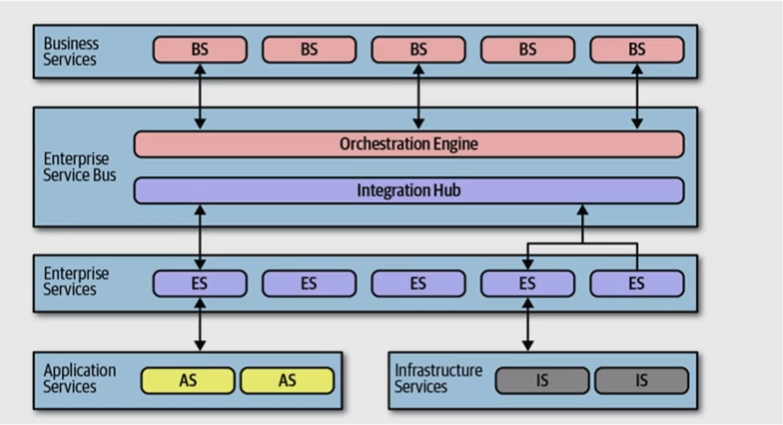

Estilo Baseado em Orquestração de Serviços
Estilo Baseado Em Orquestração de Serviços
A orquestração de serviços é um estilo arquitetural que se concentra na coordenação de vários serviços independentes para alcançar uma funcionalidade mais ampla e complexa. Nesse modelo, um serviço central, chamado “orquestrador”, coordena a execução dos serviços componentes, garantindo que eles trabalhem juntos harmoniosamente para atender a um objetivo específico.

Fundamentals of Software Architecture
Exemplo 1: Microserviços e Aplicações em Nuvem:
Em ambientes de microserviços, a orquestração de serviços é essencial. Cada microserviço realiza uma tarefa específica e pode ser invocado de maneira independente. A orquestração é usada para definir o fluxo de trabalho que envolve múltiplos microserviços. Por exemplo, em um sistema de comércio eletrônico, a orquestração pode gerenciar o processo de checkout, coordenando o pagamento, o envio e a confirmação do pedido.
Exemplo 2: Processamento de Fluxo de Trabalho:
A orquestração de serviços é frequentemente usada em sistemas de automação de fluxo de trabalho. Um sistema de gerenciamento de tarefas ou um sistema de automação de processos de negócios pode coordenar a execução de etapas individuais, garantindo que as tarefas sejam executadas na sequência correta e que a informação seja passada de um serviço para outro.
Exemplo 3: Integração de Sistemas:
A orquestração de serviços desempenha um papel crucial na integração de sistemas diversos. Por exemplo, em um ambiente empresarial, um sistema de orquestração pode ser usado para integrar sistemas de CRM, contabilidade e recursos humanos, garantindo que os dados fluam corretamente entre eles.
Vantagens da Arquitetura Baseada em Orquestração de Serviços:
-
Coordenação Eficiente: A orquestração centralizada facilita a coordenação de serviços distribuídos, garantindo que eles funcionem em conjunto de forma eficiente.
-
Flexibilidade e Reutilização: Os fluxos de trabalho podem ser definidos e ajustados de maneira flexível, permitindo a reutilização de serviços em diferentes cenários.
-
Visibilidade e Rastreabilidade: A orquestração fornece uma visão clara do fluxo de trabalho, permitindo rastrear a execução e identificar problemas.
-
Escalabilidade: A arquitetura baseada em orquestração pode escalar para atender a cargas crescentes, à medida que mais serviços são adicionados.
A arquitetura baseada em orquestração de serviços é uma abordagem eficaz para criar sistemas distribuídos altamente coordenados e flexíveis. Ela é especialmente valiosa em ambientes de microserviços, automação de fluxo de trabalho e integração de sistemas, onde a coordenação e a eficiência são fundamentais.